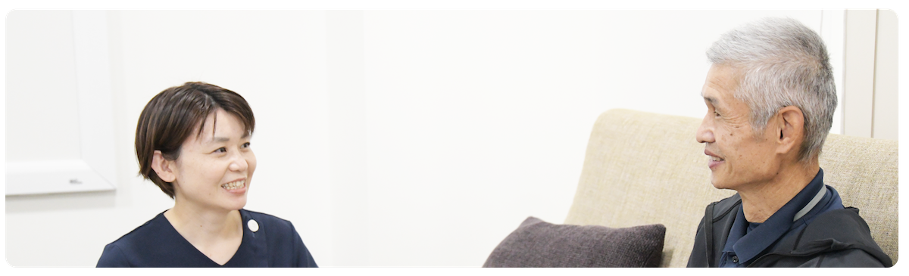
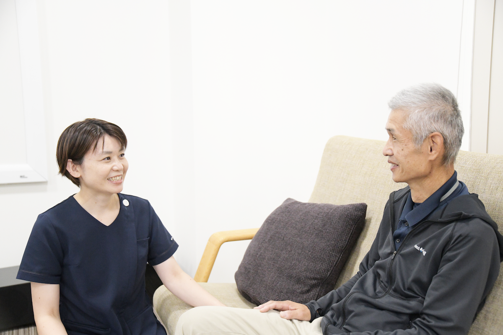
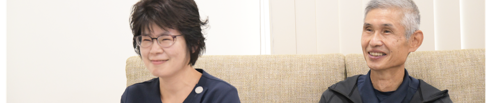
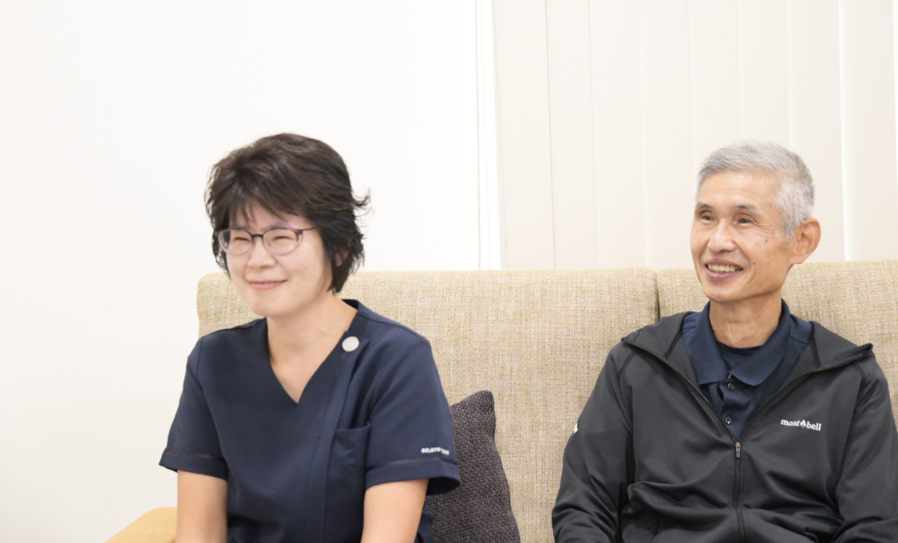
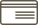

一人ひとりの想いに寄り添い、
心のこもった誠実な対応で
訪問看護ステーションのぐち
一人ひとりの想いに寄り添い、
心のこもった誠実な対応で
訪問看護ステーションのぐち
訪問看護ステーション
のぐちについて
-
01
わたしたち「訪問看護ステーションのぐち」は、ご利用者さまやご家族の「家に帰りたい」「家族と一緒にいたい」という一人ひとりの想いに寄り添い、安心してご自宅で生活していただけるよう心のこもった誠実な対応で看護を提供させていただきます。
スタッフ全員がご利用者さまとご家族のことを一番に考え、ご自宅での療養生活が安心して過ごせるよう医療的な管理から、日常での小さな困り事まで優しく丁寧に対応いたします。 -
02
理学療法士による訪問リハビリにも対応しています。看護師と連携し、ご利用者さまのご自宅での生活を支援します。
当クリニックは訪問診療もおこなっておりますので、通院が困難なご利用者さまは訪問診療とあわせてご利用していただくことも可能です。


主なサービス
体調管理から人生の最期をご自宅で迎えられたいときまで、
わたしたちがご自宅へ伺い、看護を提供させていただきます。
-
血圧・脈拍・体温
などの体調管理 -
点滴・注射などの
管理指導 -
在宅酸素・
人工呼吸器などの管理 -
腹膜透析・
透析中の方の管理 -
食事・トイレ・入浴
などの介助・指導 -
人工肛門・
人工膀胱の管理 -
ご自宅での
介護相談 -
ターミナルケア
お看取り
理学療法士による支援
訪問リハビリのご案内
理学療法士がご自宅に伺い、看護師と連携してリハビリテーションを行います。住み慣れたご自宅での生活を支えます。
ご利用については、担当のケアマネージャーや主治医、訪問看護ステーションにご相談ください。
リハビリを担当するスタッフ
理学療法士
北井 玄
看護師と理学療法士が連携し、ご利用者さまのご自宅での療養生活を支援します。
ご利用方法
-
介護保険での訪問看護の場合
ご利用者さまはまず、担当のケアマネージャーと相談して訪問看護の依頼を行います。
その際に主治医から訪問看護指示書を交付してもらう必要があります。
そしてケアマネージャーによるサービス提供計画に基づき訪問看護を実施します。 -

医療保険での訪問看護の場合ご利用者さまがかかりつけの医師に訪問看護の利用を相談します。
入院中の方は入院している病院のスタッフや相談員(ソーシャルワーカー)に相談され、医療連携室を介して申し込みいただきます。
かかりつけ医から訪問看護ステーションへ指示書が交付され訪問看護を実施します。ご不明な点は訪問看護ステーションにお問い合わせください。
-
訪問看護サービス
提供時間について月曜日～金曜日 8：30～17：30
医師が必要と認めた場合、介護保険サービスに組み込まれた場合は土日祝も対応可能です。365日24時間対応体制を
とっていますご容態が急変したとき、何かご家庭でのケアや処置の時に不安を感じたときなどはいつでもご連絡ください。
訪問看護師が電話での対応や主治医への連絡、必要時には訪問し対応いたします。
ご利用条件・費用などはこちら
利用条件などをみる在宅医療情報連携加算のご案内
当訪問看護ステーションは、在宅医療情報連携体制について、以下の整備を行っています。
患者さまの同意の上、状況に応じて以下の連携する保険医療機関・介護施設等（以下「連携機関」）との間で、ICTツール（MCS）を用いて患者さまの診療情報等を共有し、常時確認できるきめ細やかな連携体制をとっています。
連携機関一覧
- 小林薬局 マロニエ店（保険薬局）
- ケアプランセンターわたなべ（居宅介護支援事業所）
- 訪問看護ステーションゆりはま（訪問看護ステーション）
- 藤井政雄記念病院 リハビリテーション科（保険医療機関）
- 訪問看護リハビリステーションくらよし（訪問看護ステーション）
- 加藤調剤薬局（保険薬局）
- 生田調剤薬局（保険薬局）
- 訪問看護ステーション大栄（訪問看護ステーション）